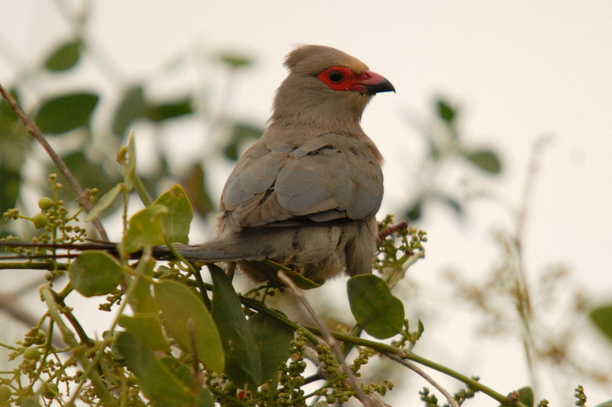

Salvadoraceae
Mustard Tree / Toothbrush Tree Family
Salvadoraceae is a small family of shrubs or small trees adapted to arid or saline environments (xerophytes/halophytes) in the Old World tropics and subtropics (Africa, Middle East, Asia). They typically have opposite, simple, entire leaves (often leathery or fleshy) with minute stipules, small 4-merous flowers, and fruit that is a berry or drupe. The family belongs to the order Brassicales, consistent with the presence of mustard oil glycosides or related compounds in some species.
Overview
The Salvadoraceae family comprises only three genera (Salvadora, Dobera, Azima) and about a dozen species. These plants are highly adapted to survive in harsh conditions like deserts, savannas, salt marshes, and coastal areas across Africa, the Middle East, India, and parts of Southeast Asia. Their adaptations often include deep root systems, leathery or fleshy leaves to reduce water loss, and tolerance to high salinity.
The most well-known species is Salvadora persica, commonly called the "toothbrush tree" or "mustard tree". Its twigs and roots have been used for centuries across its range as natural toothbrushes (miswak), possessing antimicrobial properties. Its small berries are edible, and various parts have traditional medicinal uses. The genus Azima is characterized by its spiny habit, while Dobera species are typically unarmed trees or shrubs.
Phylogenetically, Salvadoraceae is placed within the Brassicales, the order containing mustards, capers, and papayas. Its close relatives include the small families Bataceae and Koeberliniaceae, which also often inhabit saline or arid environments.
Quick Facts
- Scientific Name: Salvadoraceae
- Common Name: Mustard Tree Family, Toothbrush Tree Family
- Number of Genera: 3 (Salvadora, Dobera, Azima)
- Number of Species: Approximately 11-12
- Distribution: Arid/saline regions of Africa, Madagascar, Middle East, India, SE Asia.
- Evolutionary Group: Eudicots - Brassicales
- Habitat: Deserts, savannas, salt marshes, coastal areas.
Key Characteristics
Growth Form and Habit
Shrubs or small trees, often much-branched. Some species (Azima) are armed with axillary spines.
Leaves
Leaves are arranged oppositely. They are simple, entire (smooth-margined), and often somewhat thick, leathery or fleshy (succulent). Stipules are present but typically minute or rudimentary, sometimes appearing as small glands.
Stems
Stems are woody.
Roots
Root systems adapted for arid/saline conditions, often including deep taproots.
Sexuality and Inflorescence
Inflorescences are axillary or terminal panicles, racemes, or clusters (fascicles). Flowers are usually small and numerous. They can be perfect (bisexual) or functionally unisexual, with plants being dioecious (separate male/female plants) or polygamous (having both bisexual and unisexual flowers).
Flowers
Flowers are small, actinomorphic (radially symmetrical), and typically 4-merous. They are often greenish-white or yellowish.
- Calyx: Consists of 4 sepals fused into a short, cup-like or bell-shaped (campanulate) tube with 4 lobes. Persistent in fruit.
- Corolla: Consists of 4 petals, which are free or slightly fused at the very base, alternating with the calyx lobes.
- Androecium (Stamens): Consists of 4 stamens, positioned alternating with the petals. Filaments are free, often inserted on the corolla tube or at the base of the corolla.
- Ovary: Superior, composed of 2 fused carpels but typically developing into a 1-locular (single-chambered) ovary due to suppression or breakdown of the septum (though sometimes 2-locular at the base). Contains a single basal ovule. Style is short or absent, with a stigma that is entire or 2-lobed.
Fruits and Seeds
The fruit is a fleshy berry or drupe, typically globose (spherical) and containing a single seed. The persistent calyx often remains at the base.
Chemical Characteristics
Plants contain various compounds, including alkaloids and tannins. Consistent with their placement in Brassicales, they often contain glucosinolates or related sulfur compounds (e.g., benzyl isothiocyanate in Salvadora), contributing to a pungent taste or smell.
Field Identification
Identifying Salvadoraceae involves recognizing its habit, leaf arrangement, flower structure, and habitat/distribution:
Primary Identification Features
- Habit: Shrub or small tree in arid/saline Old World regions.
- Leaves: Opposite, simple, entire, often leathery or fleshy.
- Stipules: Minute or rudimentary.
- Flowers: Small, actinomorphic, 4-merous (4 sepals, 4 petals, 4 stamens).
- Stamen Position: Stamens alternate with petals.
- Fruit: Berry or drupe, usually 1-seeded.
- Habitat: Dry or saline environments (deserts, coasts, savannas).
Secondary Identification Features
- Spines: Present in Azima.
- Calyx: Cup-like/bell-shaped, 4-lobed, persistent.
- Ovary: Superior, functionally 1-locular.
- Scent/Taste: May have a pungent, mustard-like quality if crushed (use caution).
Seasonal Identification Tips
- Year-round Features: Habit, opposite leathery/fleshy leaves, and presence/absence of spines are visible year-round.
- Flowering/Fruiting Season: Varies with location and rainfall. Small flowers occur in clusters/panicles, followed by small berries/drupes.
Common Confusion Points
Salvadoraceae might be confused with other opposite-leaved shrubs in arid/saline zones:
- Oleaceae (Olive family, e.g., Jasminum, Olea, Ligustrum): Often have opposite, simple leaves. Distinguished by flowers typically having only 2 stamens and often a different corolla shape (e.g., tubular with lobes). Fruit varies (drupe, capsule, berry, samara).
- Rubiaceae (Coffee family): Many have opposite leaves, but are readily distinguished by the presence of conspicuous interpetiolar stipules and usually inferior ovaries.
- Capparaceae (Caper family): Some arid shrubs (Capparis) may have simple leaves (though often alternate). Flowers usually have numerous stamens and often stalked ovaries (gynophore). Different order (Brassicales), but shares glucosinolates.
- Apocynaceae (Dogbane family): Often have opposite leaves and milky latex (absent in Salvadoraceae). Flower structure is very different (often complex corona, fused styles, specialized pollination).
The combination of opposite, simple, entire leaves with minute stipules, small 4-merous flowers with 4 stamens alternating the petals, superior ovary, and berry/drupe fruit in an arid/saline Old World habitat is characteristic of Salvadoraceae.
Field Guide Quick Reference
Look For:
- Shrub/small tree (Arid/saline Old World)
- Leaves opposite, simple, entire
- Leaves often leathery/fleshy
- Stipules minute/rudimentary
- Flowers small, 4-merous, actinomorphic
- 4 stamens alternate petals
- Ovary superior, 1(-2) locules
- Fruit a berry or drupe (1-seeded)
Key Variations:
- Presence/absence of spines (Azima)
- Flower sexuality (bisexual vs unisexual)
Notable Examples
The family includes three genera, with Salvadora being the most well-known:

Salvadora persica
Toothbrush Tree, Mustard Tree, Arak
An evergreen shrub or small tree found in arid regions from Africa through the Middle East to India. Famous for its traditional use; fibrous twigs (miswak) are used as natural toothbrushes due to their texture and antimicrobial properties. Produces small, edible red berries.

Azima tetracantha
(No common name)
A rigid, much-branched, thorny shrub found in drier parts of Africa, Madagascar, India, and Sri Lanka, often near coasts. Characterized by pairs of sharp axillary spines. Used in traditional medicine.
Phylogeny and Classification
Salvadoraceae is placed within the eudicot order Brassicales. This order is well-known for containing the mustard family (Brassicaceae) and is characterized by the frequent production of glucosinolates (mustard oil glycosides).
Molecular phylogenetic studies indicate that Salvadoraceae is closely related to two other small families, Bataceae (saltworts, succulent subshrubs of coastal Americas and Pacific) and Koeberliniaceae (containing only Koeberlinia spinosa, the crown of thorns, a spiny shrub of SW USA and Mexico). These three families form a distinct clade within Brassicales, often adapted to saline or arid conditions, and somewhat removed from the core Brassicales group that includes Brassicaceae, Capparaceae, and Cleomaceae.
Position in Plant Phylogeny
- Kingdom: Plantae
- Clade: Angiosperms (Flowering plants)
- Clade: Eudicots
- Clade: Rosids
- Order: Brassicales
- Family: Salvadoraceae
Evolutionary Significance
Salvadoraceae is significant for:
- Adaptation to Extreme Environments: Represents a lineage within Brassicales that has successfully specialized in arid and saline habitats, showcasing adaptations like xerophytic or halophytic traits.
- Phylogenetic Position: Its relationship with Bataceae and Koeberliniaceae helps define a distinct clade within Brassicales, separate from the core group, aiding understanding of the order's diversification.
- Ethnobotanical Importance: Salvadora persica has significant cultural importance across many regions due to its long history of use as a natural toothbrush and in traditional medicine.
- Chemical Traits: The presence of glucosinolates or related compounds supports its placement within Brassicales and is relevant to its medicinal properties and defense mechanisms.